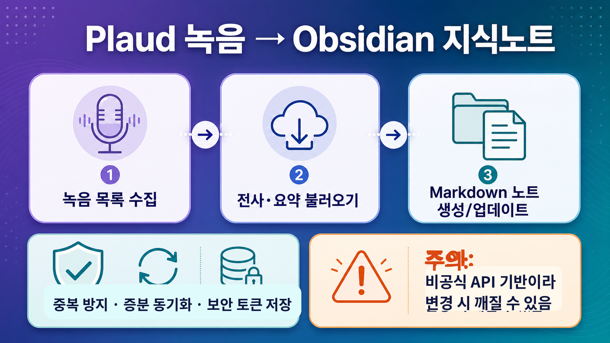

인포그래픽 크게 보기

GitHub 레포지토리 한눈 분석
Plaud 녹음을 Obsidian 지식노트로 바꾸는 동기화 플러그인
Plaud 녹음의 전사·AI 요약·하이라이트·메타데이터를 Markdown 노트로 가져와 개인 지식관리 흐름에 붙여주는 비공식 Obsidian 플러그인입니다.
추천 대상: Plaud+Obsidian 사용자
상태: 테스트/빌드 통과
주의: 비공식 API 의존
59GitHub stars
10forks
41분석 파일 수
2142코드 라인